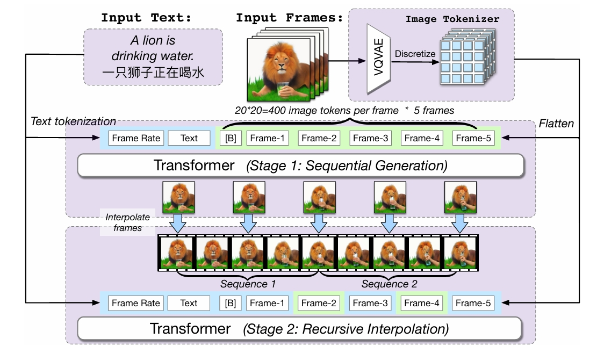
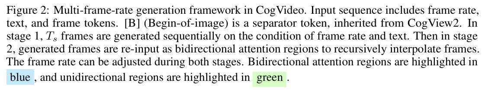
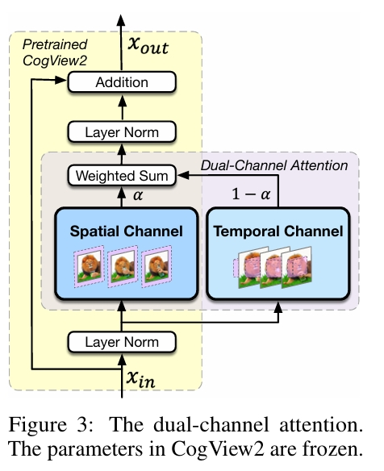

CogVideo: Large-scale Pretraining for Text-to-Video Generation via Transformers
1. 研究背景与核心挑战
文本到视频生成（Text-to-Video Generation）是生成式AI领域的重要方向，但面临两大核心挑战：
- 数据稀缺性：与文本-图像数据相比，高质量文本-视频对规模有限（如最大的标注数据集VATEX仅4.1万视频），且检索型数据（如Howto100M）的文本与视频动作时间关联性弱。
- 时间对齐与运动建模：传统自回归模型（如VideoGPT）生成的视频帧易偏离文本提示，难以捕捉复杂动作（如“狮子喝水”需分解为举杯、饮用、放下等时序动作）。
2. 方法创新
CogVideo通过继承图像生成模型知识与分层训练策略实现高效视频生成，主要技术亮点如下：
- 多帧率分层训练
- 关键帧生成：基于预训练文本-图像模型CogView2（60亿参数）生成低帧率关键帧（如1 fps），通过文本中嵌入帧率标记（如“以1 fps生成”）控制时序对齐。
- 帧插值：引入双向注意力机制的插值模型递归填充中间帧，逐步提升帧率（如至32 fps），增强视频连贯性。通过滑动窗口机制优化长序列生成效率，减少内存消耗。


- 双通道注意力（Dual-channel Attention）

在CogView2的每个Transformer层中新增时空注意力模块，冻结原始图像生成参数，仅训练新增通道。通过混合因子α动态融合图像与时空特征，避免破坏预训练知识。
- 训练数据与分辨率优化
使用540万文本-视频对，原始视频分辨率160×160，通过CogView2上采样至480×480，平衡生成质量与计算成本。
3. 实验与性能
- 评估指标
- FVD（Fréchet Video Distance）：评估生成视频与真实视频分布的距离，数值越低越好。
- IS（Inception Score）：衡量生成视频的清晰度与多样性，数值越高越好。
- 结果对比
- 在UCF-101和Kinetics-600数据集上，CogVideo的FVD和IS得分处于中等水平，但人类评估（90名志愿者参与）显示其在语义相关性、动作真实感等方面显著优于基线模型（如VideoGPT）。
- 生成示例中，模型能处理复杂场景（如“燃烧的心”“海滩奔跑”），但也存在逻辑错误（如“狮子用手喝水”）。
4. 贡献与意义
- 首个开源大规模文本-视频模型：94亿参数规模，为社区提供可复现的研究基础。
- 高效迁移学习：通过冻结图像模型参数与新增模块，避免从头训练的高成本，实现知识迁移。
- 多模态扩展潜力：框架支持多种条件输入（如边界框、风格参考），为影视预演、游戏开发等场景提供工具。
5. 局限与未来方向
- 生成质量限制：依赖低分辨率训练数据，细节生成（如纹理、光照）仍需优化。
- 语言输入限制：仅支持中文提示，需依赖翻译工具扩展多语言场景。
- 计算效率：尽管采用滑动窗口机制，长视频生成仍需要高性能硬件支持。
- 未来改进：结合动态条件生成（如用户交互编辑）、3D建模（如VR视频）及多模态融合（如音频同步）。
总结
CogVideo通过创新的分层训练与注意力机制设计，推动了文本到视频生成的实用化进程。其开源特性与技术框架为后续研究（如长视频生成、多模态控制）提供了重要参考，标志着生成式AI从静态图像向动态视频的关键跨越。